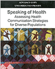
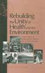
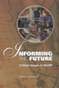

Health Disparities Resources
Bibliography of Tobacco-Related Literature on Hispanics/Latinos 1990-2001:
http://cancercontrol.cancer.gov/brp/tcrb/hisp_biblio.pdf
Provides a comprehensive list of tobacco-related scientific literature pertaining to the Hispanic/Latino population.
Speaking of Health: Assessing Health Communication Strategies for Diverse Populations: http://www.nap.edu/catalog/10018.html?onpi_listserv071202
Speaking of Health looks at the challenges of delivering important messages to different audiences. Using case studies in the areas of diabetes, mammography, and mass communication campaigns, it examines the ways in which messages must be adapted to the unique informational needs of their audiences if they are to have any real impact. The book looks at basic theories of communication and behavior change and focuses on where they apply and where they don't. In an age where we are inundated by multiple messages every day, this book will be a critical tool for all who are interested in communicating with diverse communities about health issues.
Intercultural Cancer Council:
http://iccnetwork.org/cancerfacts/
Provides Cancer Facts for Special Populations (African-Americans, American Indians and Alaskan Natives, Asian-American and Pacific Islanders, Hispanics, Rural Poor and Medically Underserved Americans)
Brian D. Smedley, Adrienne Y. Stith, and Alan R. Nelson. (2002). Unequal Treatment: Confronting Racial and Ethnic Disparities in Health Care. Committee on Understanding and Eliminating Racial and Ethnic Disparities in Health Care, Board on Health Sciences Policy.
This report is the most exhaustive analysis of the disparities in treatment and health outcomes. Requested by Congress, the information shines a harsh light on the effects of patient stereotyping and of an expensive health system that often forces patients to ration their own care. Researchers identify language barriers, inadequate insurance coverage, bias among doctors and nurses, and a woeful lack of minority physicians as reasons why nonwhite patients receive fewer tests and inferior treatment.http://www.nap.edu/catalog/10260.html
 Hanna, K., Coussens, C. (2001). Rebuilding the Unity of Health and the Environment: A New Vision of Environmental Health for the 21st Century. Washington, DC: National Academy Press.
The Institute of Medicine's Environmental Health Sciences Roundtable was formed to provide a neutral place for debates of the current issues in environmental health. This book summarizes the discussions that occurred during the 2-day IOM workshop.
http://books.nap.edu/catalog/10044.html
 Institute of Medicine. (2001). Informing the Future: Critical Issues in Health. Washington, DC: National Academy Press.
This booklet provides an overview of the work of the Institute of Medicine and highlights its important policy measures that are planned, suggested, or in process.
http://books.nap.edu/catalog/10059.html
Singer, B.H., Ryff, C.D. (eds.). (2001). New Horizons in Health: An Integrative Approach. Washington, DC: National Academy Press.
This is a report of suggestions supporting areas of high priority provided by the Committee on Future Directions for Behavioral and Social Sciences Research at the National Institutes of Health.
http://books.nap.edu/catalog/10002.html
 Smedley, B.D., Syme, S.L. (eds.). (2000). Promoting Health: Intervention Strategies from Social and Behavioral Research. Washington, DC: National Academy Press.
Smedley, B.D., Syme, S.L. (eds.). (2000). Promoting Health: Intervention Strategies from Social and Behavioral Research. Washington, DC: National Academy Press.
The Institute of Medicine Committee on Capitalizing on Social Science and Behavioral Research to Improve the Public's Health was charged to help identify promising areas of social science and behavioral
research that may address public health needs. This report serves to assess whether the growing knowledge base of literature has been useful, or could be useful, in the development of broader public health interventions.
http://books.nap.edu/catalog/9939.html
 Stoto, M.A., Green, L.W., Bailey, L.A. (1997). Linking Research and Public Health Practice: A Review of CDC's Program of Centers for Research and Demonstration of Health Promotion and Disease Prevention. Washington, DC: National Academy Press.
Stoto, M.A., Green, L.W., Bailey, L.A. (1997). Linking Research and Public Health Practice: A Review of CDC's Program of Centers for Research and Demonstration of Health Promotion and Disease Prevention. Washington, DC: National Academy Press.
CDC established a program of university-based Centers for Research and Demonstration of Health Promotion and Disease Prevention to explore improved ways of appraising health hazards and to serve as demonstration sites for new and innovative research in public health. This book examines the vision for the prevention research centers program, the projects conducted by the centers, and the management and oversight of the program.
http://books.nap.edu/catalog/5564.html